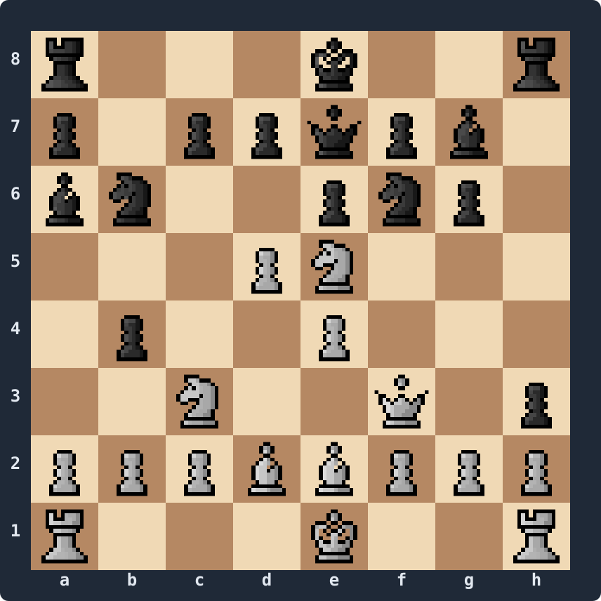

A chess engine plays moves by searching: it explores the tree of "what if we played this, then they played that, then..." and picks the move at the root that leads to the best position. Search is glamorous. But search is also useless without a fast and correct move generator underneath — the function that, given a position, hands back every legal move available.
This series is about building that function in C#. By the end we'll have a cross-platform .NET move generator that produces only legal moves and passes the standard validation tests. Today, in Part 1, we'll do three things: see where move generation fits in the engine, set up the validation tool we'll use throughout the rest of the series, and write our first compiling code.
Where move generation fits
The classic engine pipeline looks like this:
position
→ generate moves
→ for each move:
make move
score recursively (search + eval)
unmake move
→ return bestThree things stand out:
- The generator produces a set of moves, not just one.
- After each generated move we apply it (
MakeMove), then reverse it (UnmakeMove), so the original position is intact for the next sibling. - The generator runs at every node of the search tree. A modern engine touches tens or hundreds of millions of nodes per second. Speed matters — but correctness matters more.
A correct but slow generator gives us a slow engine. A fast generator that emits one wrong move will eventually produce a position with the king missing, a phantom piece, or a perpetual-check loop that doesn't exist. The search above it will happily report nonsense.
Pseudo-legal vs legal
A move is pseudo-legal if it follows the rules of how pieces move — pawns push forward, knights jump in L-shapes, rooks slide along ranks and files — but might leave our own king in check. A move is legal if it's pseudo-legal and doesn't leave our king in check.
The distinction matters because pseudo-legal moves are cheap to generate (just shifts and table lookups), while filtering down to the strictly legal ones is fiddly. We need to handle pins, checks, and a famously subtle en-passant case where two pawns vacate the same rank at once.
The series follows that order. We'll build a pseudo-legal generator first (Part 4), pair it with MakeMove and UnmakeMove (Part 5), optimise the slider attacks with magic bitboards (Part 6), and then refine the generator to emit only legal moves (Part 7). We'll know we got it right when our perft numbers match the published references.
Perft — the yardstick
Perft (short for performance test or move-path enumeration) walks the legal move tree to a given depth and counts the leaves. It's the standard way to validate a move generator. If our numbers match the references at every depth, our generator is correct. If they don't, we have a specific bug to find.
For the initial position, the canonical leaf counts are:
| Depth | Nodes |
|---|---|
| 0 | 1 |
| 1 | 20 |
| 2 | 400 |
| 3 | 8,902 |
| 4 | 197,281 |
| 5 | 4,865,609 |
| 6 | 119,060,324 |
Matching these to depth 6 from the initial position catches the majority of generator bugs. But the initial position never tests castling, en passant, or promotion — so we also lean on a second position, Kiwipete, picked specifically because it stresses every special move at once:
FEN: r3k2r/p1ppqpb1/bn2pnp1/3PN3/1p2P3/2N2Q1p/PPPBBPPP/R3K2R w KQkq -

Expected Kiwipete counts:
| Depth | Nodes |
|---|---|
| 1 | 48 |
| 2 | 2,039 |
| 3 | 97,862 |
| 4 | 4,085,603 |
| 5 | 193,690,690 |
These are the two positions we'll come back to at the end of each article in the series.
A first piece of code
We can't compute perft yet — we have no move generator. But we can already do two useful things: print a FEN string as an ASCII board (handy for debugging from here on), and write the perft skeleton we'll wire a real generator into over the next six articles.
FenBoard.cs — render a FEN to ASCII
We'll only process the first field of the FEN (piece placement). Full FEN parsing comes in Part 2 when we set up the Position type properly.
using System.Text;
public static class FenBoard
{
public static string Render(string fen)
{
string placement = fen.Split(' ')[0];
string[] ranks = placement.Split('/'); // rank 8 first, rank 1 last
var sb = new StringBuilder();
for (int r = 0; r < 8; r++)
{
sb.Append(8 - r).Append(' ');
foreach (char c in ranks[r])
{
if (char.IsDigit(c))
{
int empties = c - '0';
for (int i = 0; i < empties; i++) sb.Append(". ");
}
else
{
sb.Append(c).Append(' ');
}
}
sb.AppendLine();
}
sb.Append(" a b c d e f g h");
return sb.ToString();
}
}Uppercase letters are white pieces, lowercase are black, dots are empty squares. Enough to make our test positions readable.
Perft.cs — the skeleton
Perft itself is tiny — it recurses to the requested depth, making each move on the way down and unmaking it on the way back up. At depth 0, every position counts as a single node.
public static class Perft
{
public static ulong Run(Position position, int depth)
{
if (depth == 0) return 1UL;
ulong nodes = 0UL;
Move[] moves = MoveGenerator.GenerateMoves(position);
for (int i = 0; i < moves.Length; i++)
{
position.MakeMove(moves[i]);
nodes += Run(position, depth - 1);
position.UnmakeMove(moves[i]);
}
return nodes;
}
}That's it. The whole loop is six lines: generate, then make → recurse → unmake for each. Notice we count nodes only at the leaves — interior nodes don't add to the total. The shape of perft never changes throughout the series; only the things it calls do.
Position, Move, and MoveGenerator don't exist yet. To keep the project compiling we'll define throwaway stubs we'll replace in Part 2:
public sealed class Position { }
public readonly struct Move { }
public static class MoveGenerator
{
public static Move[] GenerateMoves(Position position) => System.Array.Empty<Move>();
}
public static class PositionExtensions
{
public static void MakeMove (this Position p, Move m) { }
public static void UnmakeMove(this Position p, Move m) { }
}And a Program.cs to exercise both:
internal class Program
{
const string InitialFen = "rnbqkbnr/pppppppp/8/8/8/8/PPPPPPPP/RNBQKBNR w KQkq - 0 1";
const string KiwipeteFen = "r3k2r/p1ppqpb1/bn2pnp1/3PN3/1p2P3/2N2Q1p/PPPBBPPP/R3K2R w KQkq -";
static void Main()
{
System.Console.WriteLine("Initial position:");
System.Console.WriteLine(FenBoard.Render(InitialFen));
System.Console.WriteLine();
System.Console.WriteLine("Kiwipete:");
System.Console.WriteLine(FenBoard.Render(KiwipeteFen));
System.Console.WriteLine();
ulong nodes = Perft.Run(new Position(), 0);
System.Console.WriteLine($"perft(0) = {nodes}"); // 1
}
}Run it and we see two boards and perft(0) = 1. Try Perft.Run(new Position(), 1) and we get 0 — because our stub generator returns no moves. That's a hard-coded failure waiting for us to fix.
What we've got
- A FEN-to-ASCII printer we'll use for debugging every position from now on.
- A perft function whose shape is final — the rest of the series fills in everything around it.
- Two reference positions (initial + Kiwipete) and their expected node counts, so we always know when a generator change makes things better or worse.
What's next
In Part 2 we throw away those stub types and build a real Position: twelve piece bitboards, a parallel 8×8 mailbox, full FEN parsing, and a board printer that shows the whole position — side to move, castling rights, en-passant square, and all. By the end of Part 2 we'll load Kiwipete, print it correctly, and round-trip it back to a FEN string.